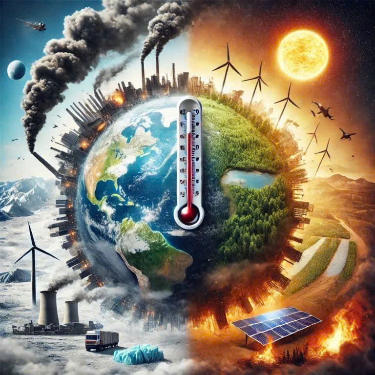
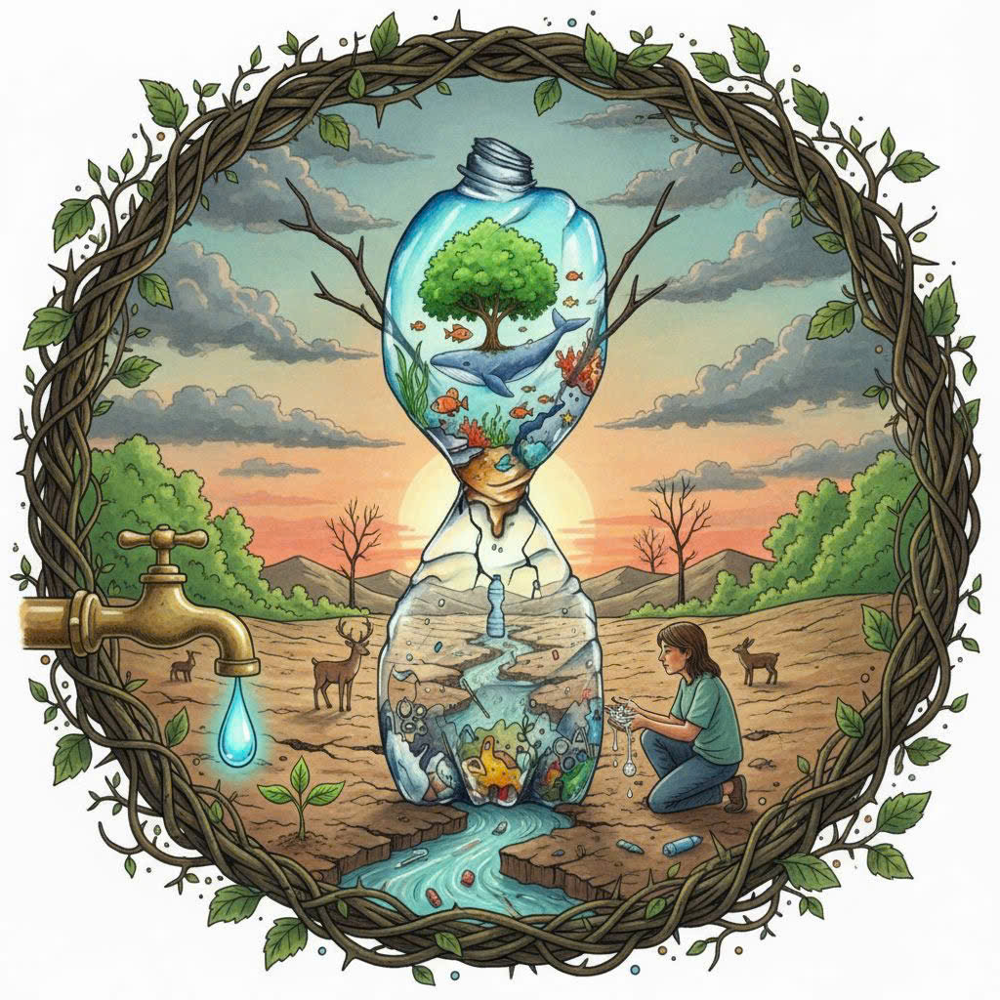

Giảm thiểu ô nhiễm: Bảo vệ môi trường giúp giảm thiểu ô nhiễm không khí, nước, và đất, từ đó bảo vệ sức khỏe con người và các sinh vật.
Bảo vệ đa dạng sinh học: Môi trường là nơi sinh sống của hàng triệu loài động, thực vật và vi khuẩn khác nhau. Bảo vệ môi trường giúp duy trì và tăng cường sự đa dạng sinh học.
Giảm tác động biến đổi khí hậu: Bảo vệ môi trường đóng vai trò quan trọng trong giảm tác động của biến đổi khí hậu.


Hoạt động bảo vệ môi trường tại An Giang
Trồng cây xanh: Trồng cây giúp giảm thiểu biến đổi khí hậu, bảo vệ nguồn nước, và duy trì đa dạng sinh học.
Tái chế rác thải: Tái chế giúp giảm thiểu lượng rác thải, bảo vệ nguồn tài nguyên, và giảm thiểu ô nhiễm môi trường.
Sử dụng năng lượng tái tạo: Sử dụng năng lượng mặt trời, gió, thủy điện giúp giảm thiểu biến đổi khí hậu và bảo vệ môi trường.